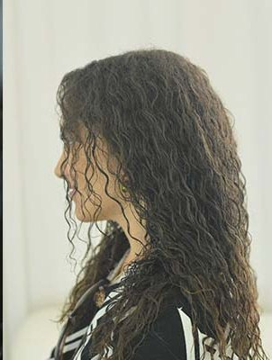
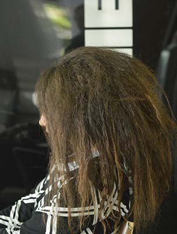
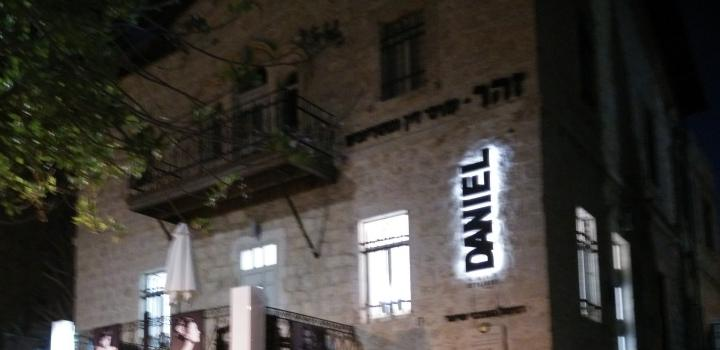
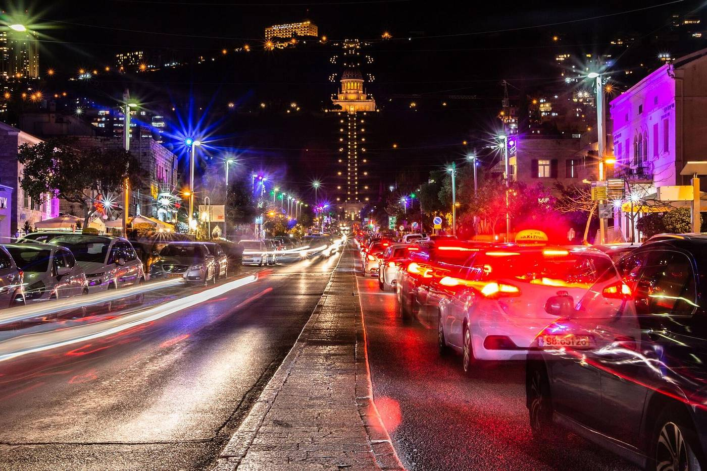

תלתלים, מקרוב.Curls, up close.
- תספורת תלתליםCurly haircuts
- פתיחת תלתליםCurl loosening
- בניית תלתלים, בשיטה של דניאלCurl building, Daniel’s own method
- תוספות לשיער מתולתלExtensions for curly hair
- צבע, גוונים ובליאז׳Colour, highlights and balayage
- ייעוץ ובדיקת קרקפתConsultations and scalp checks
גם שיער חלק מוזמן, כמובן.Straight hair is welcome too, of course.
עבודה של המספרה. צילום: moran vakninThe salon’s work. Photo: moran vaknin
לפני, ואחרי.Before, and after.
שתי לקוחות, מהאתר של דניאל. גררו את המסרק.Two clients, from Daniel’s own website. Drag the comb.


- המושבה הגרמנית, חיפהGerman Colony, Haifa
- מעצבי שיער מאז 1994Hair stylists since 1994
- 04-855-5544
קרול וכמל דניאלCarol and Kamel Daniel

 קרול וכמל דניאל, אחים ומעצבי שיער. הם בחרו בתלתלים, כי תלתל צריך להבין כדי לעבוד איתו נכון.Carol and Kamel Daniel, brothers and hair stylists. They chose curls, because a curl has to be understood before you can work with it well.
קרול וכמל דניאל, אחים ומעצבי שיער. הם בחרו בתלתלים, כי תלתל צריך להבין כדי לעבוד איתו נכון.Carol and Kamel Daniel, brothers and hair stylists. They chose curls, because a curl has to be understood before you can work with it well.
מתוך זה נולדה בניית התלתלים, שיטה שפיתחו לאורך השנים במספרה.Out of that came curl building, a method they developed in the salon over the years.
הבית, ביום.The house, by day.

בית אבן
בשדרהA stone house
on the boulevard


החזית, השלט, החלון, והכיסאות בפנים.The front, the sign, a window, and the chairs inside.

״המקום מואר ומזמין, באווירה של מספרות עילית בחו״ל […] ואני יוצאת מכאן ומרגישה מושלמת!״“The place is bright and inviting, like the best salons abroad […] and I leave feeling perfect!”
4.8 בגוגל.4.8 on Google.
״צוות מנצח של בעלי מקצוע סופר אדיבים […] בונים גם תלתלים, אבל בעיקר ביטחון עצמי למי שיש לו שיער בסגנון אפרו.״“A winning team of super kind professionals […] they build curls, but above all confidence, for anyone with afro-style hair.”
״צוות מקצועי אדיב וחביב […] אף פעם לא דמיינתי שאחרי מקלחת השיער לא יצטרך שעה וחצי לסדר אותו.״“A kind, friendly, professional team […] I never imagined that after a shower my hair wouldn’t need an hour and a half to style.”
לקבוע תור.Book a visit.
בחרו טיפול ויום, וההודעה תישלח למספרה בוואטסאפ.Pick a treatment and a day, and the message goes to the salon on WhatsApp.
או פשוט להתקשר.Or simply call.
04-855-5544
שדרות בן גוריון 30.30 Ben Gurion Blvd.
שדרות דוד בן גוריון 30, המושבה הגרמנית, חיפה30 David Ben Gurion Ave, German Colony, Haifa